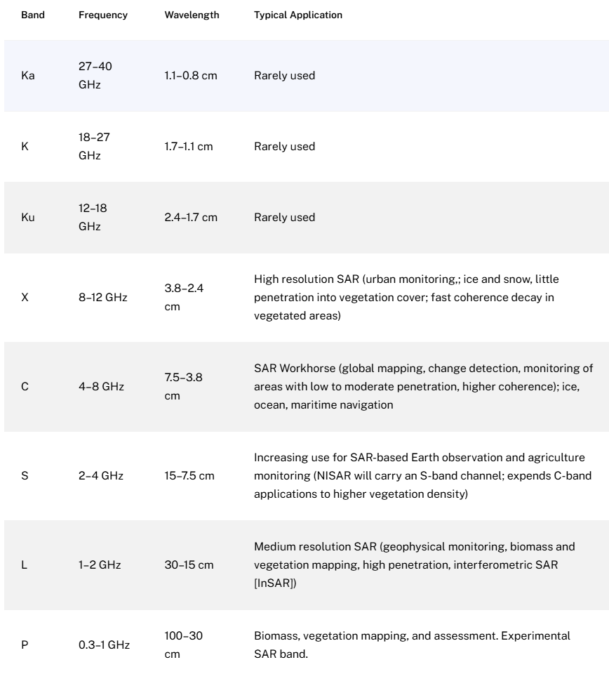
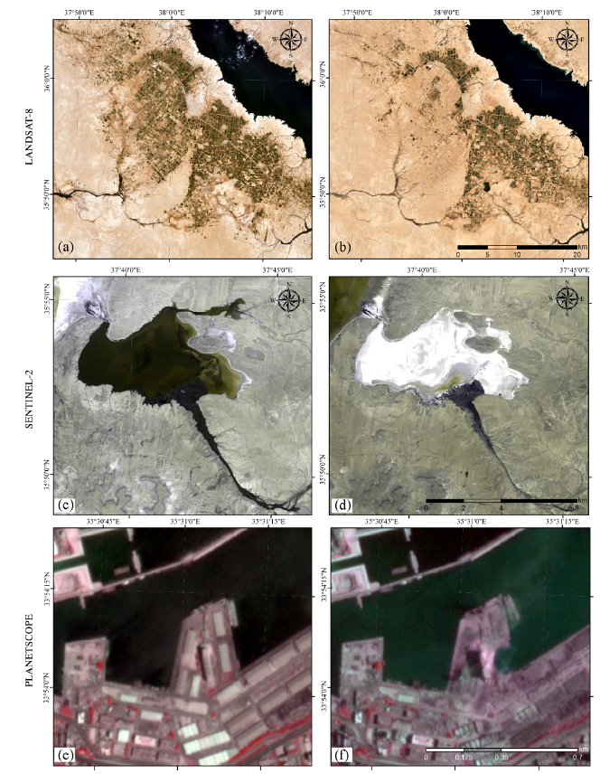
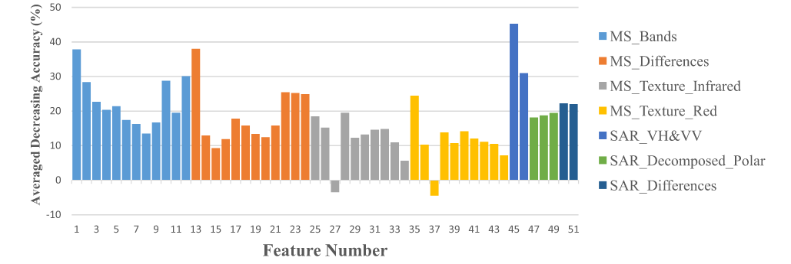
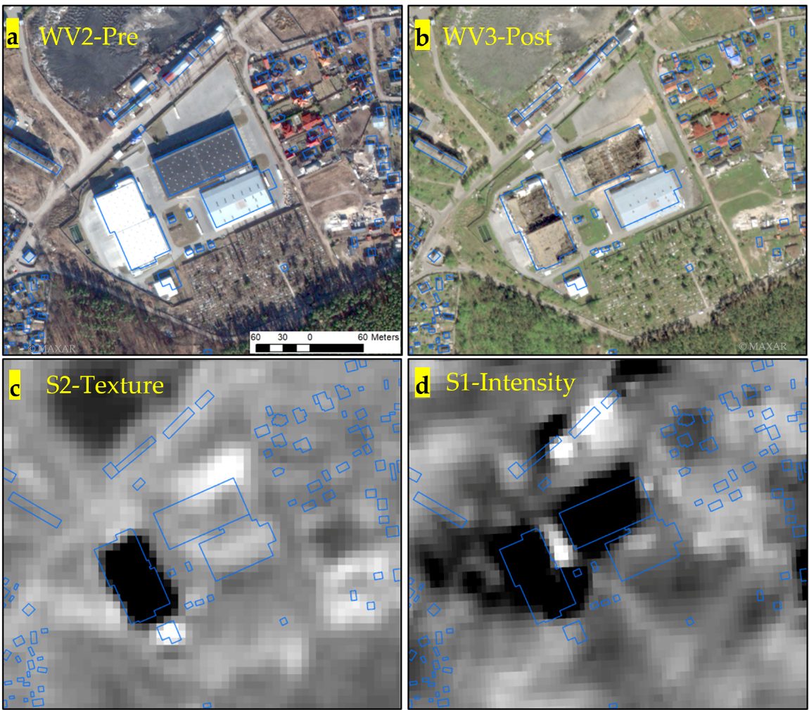

| Expression Format | Formula (Visual) | Advantages | Disadvantages | Suitable Use |
|---|---|---|---|---|
| Power | I² + Q² | Most original and accurate representation of radar backscatter; linear values; suitable for statistical and ML analysis | Very small values; low contrast between bright and dark areas; poor for visualization | Data analysis, modeling, classification |
| Amplitude | √(I² + Q²) | Natural-looking brightness range in images; easy for visual interpretation | Still linear; large dynamic range; less detail enhancement compared to dB | Image processing, visual analysis |
| dB | 10 × log₁₀(Power) | Compressed dynamic range; easier to observe details in dark regions (e.g., water); default format in GEE | Not linear; unsuitable for statistical/scientific calculation; bright areas may appear saturated | Image visualization; highlighting differences/contrast |
Syntactic Aperture Radar
Summary
SAR base background and advantages
Synthetic Aperture Radar (SAR) is an active remote sensing sensor. Unlike passive sensors that rely on solar radiation, SAR actively emits its own electromagnetic waves and forms images by receiving the backscattered signals from the Earth’s surface. This mechanism makes SAR unaffected by cloud and weather, allowing for all-weather observation. SAR improves spatial resolution by synthesising backscatter from multiple observation angles as the sensor moves along its path. In Week 4, I analysed OE data related to flood monitoring. Compared to Landsat 8, SAR data provides greater continuity and reliability, especially in disaster scenarios. This is because SAR can penetrate cloud cover and reduce data loss caused by cloudy or rainy conditions.
SAR data types and parameter selection
SAR data characteristics are primarily defined by wavelength (band) and polarisation. Common bands include X, C, and L. Wavelength determines the radar’s penetration ability: short-wavelength bands (e.g., X-band) are suitable for monitoring surface features, while long-wavelength bands (e.g., L-band) can penetrate vegetation, allowing for the analysis of forest structure.

Polarisation refers to the orientation of the radar wave’s oscillation. Different surface types respond differently to each polarisation mode: VV is sensitive to rough surface scattering, while VH is better suited for detecting volume scattering (e.g., vegetation). The selection of band-polarisation combinations should be made with care for the specific analytical objective.

SAR backscatter intensity can be expressed in three main formats: power, amplitude, and dB, each with different advantages and applications due to SAR’s wide dynamic range.
SAR data application
SAR applications often rely on comparing images acquired at different times. Differential InSAR (DInSAR) detects ground movement by measuring phase differences between two SAR images acquired at different times. It is commonly used to monitor earthquakes and land subsidence. There are several techniques for detecting changes using SAR data. Unlike optical data, SAR images cannot be simply subtracted due to their multiplicative noise and different statistical characteristics. Commonly used methods include ratio, improved ratio, and log-ratio techniques.
To enhance classification accuracy, SAR imagery is often fused with optical data. Fusion strategies—ranging from decision-level to pixel-level—combine the complementary strengths of both datasets. While decision-level fusion is more accessible and commonly used in GEE, I realised that more complex fusion techniques offer higher precision and will likely be essential in future applications such as agricultural monitoring.
Application
Remote sensing data play a vital role not only in scientific analysis but also in humanitarian disaster assessment. This week’s lecture illustrates how SAR data can be applied to assess war-related damage. Earth observation (EO) satellite missions offer a cost-effective and repeatable solution for monitoring war impacts. Due to their relatively low spatial resolution, the Landsat series enables faster image processing and lower computational demands. However, its spatial resolution is insufficient for detecting changes at the building level. As a result, it is difficult to assess the extent of structural damage in urban areas. Therefore, war monitoring using Landsat data has focused on broader environmental changes, lacking direct insight into urban structural damage (e.g., buildings). That limits the ability to quantitatively assess socio-economic losses. (Kaplan et al. 2022)

Sentinel-1 and Sentinel-2 have higher resolution, so they are widely used in the study of urban change and damage to buildings caused by war. Most of the studies apply machine learning techniques to extract image features from Sentinel-2 and polarization features (e.g., VH, HH) from SAR data. Then, classifiers are used to evaluate building damage and classify war-affected areas.(Aimaiti et al. 2022; Li, Guo, and Chan 2025; Fakhri and Gkanatsios 2021) As previously discussed in Week 3, image features play a key role in urban classification and object identification. In terms of classification accuracy, MS-based data generally has higher overall accuracy than SAR-based data. The VH polarization in SAR data plays the most important role in detecting destroyed buildings. This may be due to their higher sensitivity to structural variations. SAR data is affected by speckle noise at low resolution. MS data captures features well but responds poorly to abrupt structural changes. Li, Guo, and Chan (2025) applied a Random Forest model to classify war-related features using fused Sentinel-1 SAR and Sentinel-2 MS data. Fused data achieved 95.91% accuracy, outperforming MS (95.01%) and SAR (78.65%).

Although many articles emphasise the advantages of SAR’s independence from weather. I think the spatial distribution and extent of damage to the building are more important than continuous monitoring over time. Aimaiti et al. (2022) performed change detection by calculating the log ratio of backscatter intensity and GLCM texture difference. The process then continued with classification, avoiding two-stage model training and improving overall efficiency.

Reflection
SAR is now widely used in disaster assessment, including natural and war-related disasters. SAR is characterised by insensitivity to weather conditions, short acquisition cycles and high structural responsiveness. This week’s readings highlighted the importance of intensity ratios and polarization features in SAR-based analysis. The phase is also useful; it can detect slight ground movement. Interferometric SAR (InSAR) techniques have already been used to detect landslides, due to their ability to capture small-scale deformations. Is it possible to identify localised ground disturbances caused by war (e.g. blast impacts)? Does that mean InSAR can be applied to war damage assessment? Through this week’s lecture, I gained knowledge about the importance of remote sensing images in disaster assessment. Automated remote sensing processes can provide disaster damage assessments in the first instance. It provides scientific evidence for the timely allocation of relief resources and thus better reflects the humanitarian spirit. Moreover, the data discussed this week is open-source, and its application helps reduce the development gap between countries. In the future, an open framework for international cooperation on disaster assessment could be developed, potentially contributing to the scientific coordination of humanitarian aid. Although such ideas face practical challenges such as data privacy and national sovereignty, their potential merits warrant further exploration.
References
Aimaiti, Yusupujiang, Christina Sanon, Magaly Koch, Laurie G. Baise, and Babak Moaveni. 2022. “War Related Building Damage Assessment in Kyiv, Ukraine, Using Sentinel-1 Radar and Sentinel-2 Optical Images.” Remote Sensing 14 (24): 6239. https://doi.org/10.3390/rs14246239.
Castillejo-González, Isabel Luisa, Francisca López-Granados, Alfonso García-Ferrer, José Manuel Peña-Barragán, Montserrat Jurado-Expósito, Manuel Sánchez De La Orden, and María González-Audicana. 2009. “Object- and Pixel-Based Analysis for Mapping Crops and Their Agro-Environmental Associated Measures Using QuickBird Imagery.” Computers and Electronics in Agriculture 68 (2): 207–15. https://doi.org/10.1016/j.compag.2009.06.004.
Fakhri, Falah, and Ioannis Gkanatsios. 2021. “Integration of Sentinel-1 and Sentinel-2 Data for Change Detection: A Case Study in a War Conflict Area of Mosul City.” Remote Sensing Applications: Society and Environment 22 (April): 100505. https://doi.org/10.1016/j.rsase.2021.100505.
Kaplan, Gordana, Tatjana Rashid, Mateo Gasparovic, Andrea Pietrelli, and Vincenzo Ferrara. 2022. “Monitoring War-Generated Environmental Security Using Remote Sensing: A Review.” Land Degradation and Development 33 (10): 1513–26. https://doi.org/10.1002/ldr.4249.
Li, Xinchen, Liang Guo, and Jonathan Cheung-Wai Chan. 2025. “Combined Sentinel-1 and Sentinel-2 Imagery for Destroyed Building Classification in Gaza Strip with Random Forest.” IEEE Journal of Selected Topics in Applied Earth Observations and Remote Sensing 18: 3827–39. https://doi.org/10.1109/JSTARS.2024.3522389.